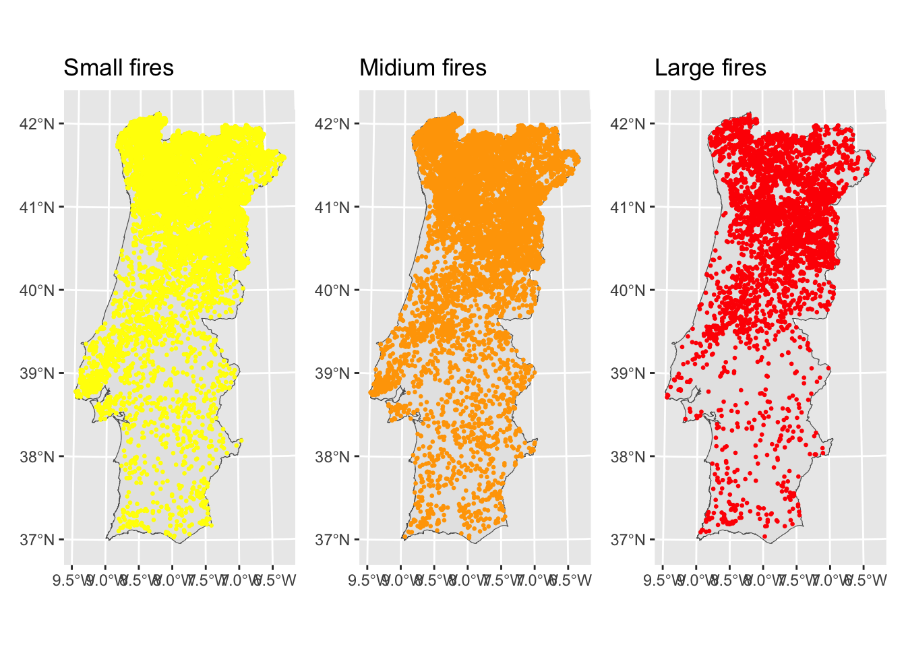
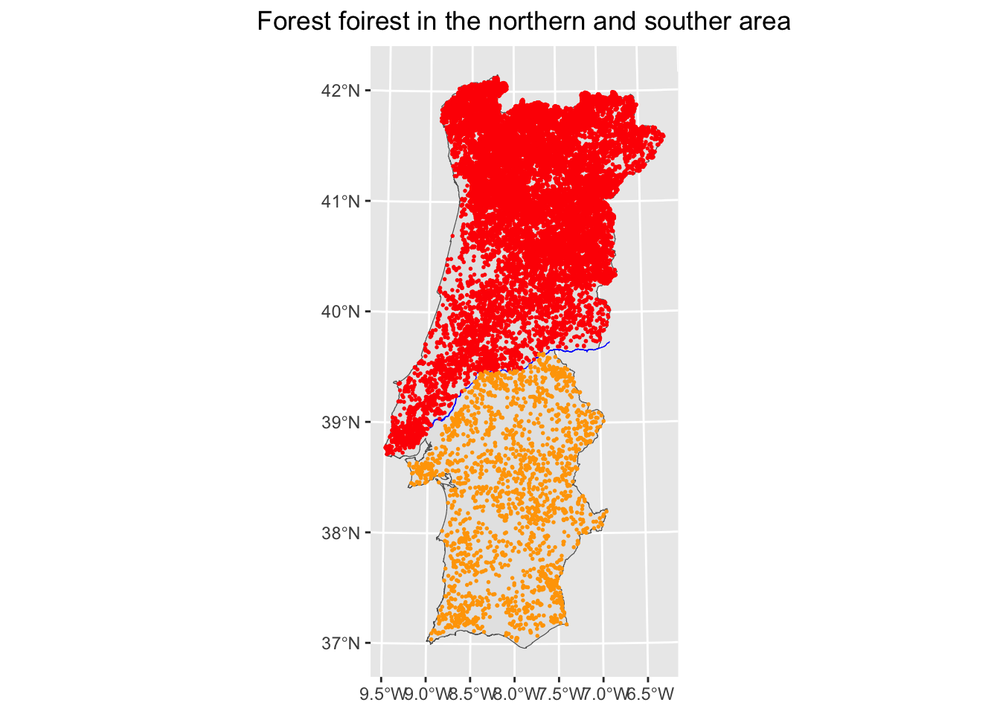
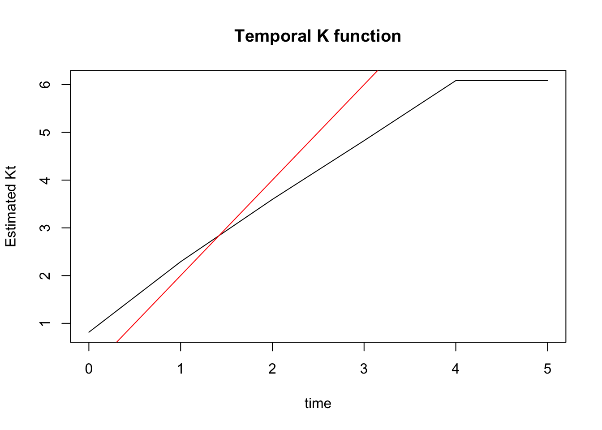
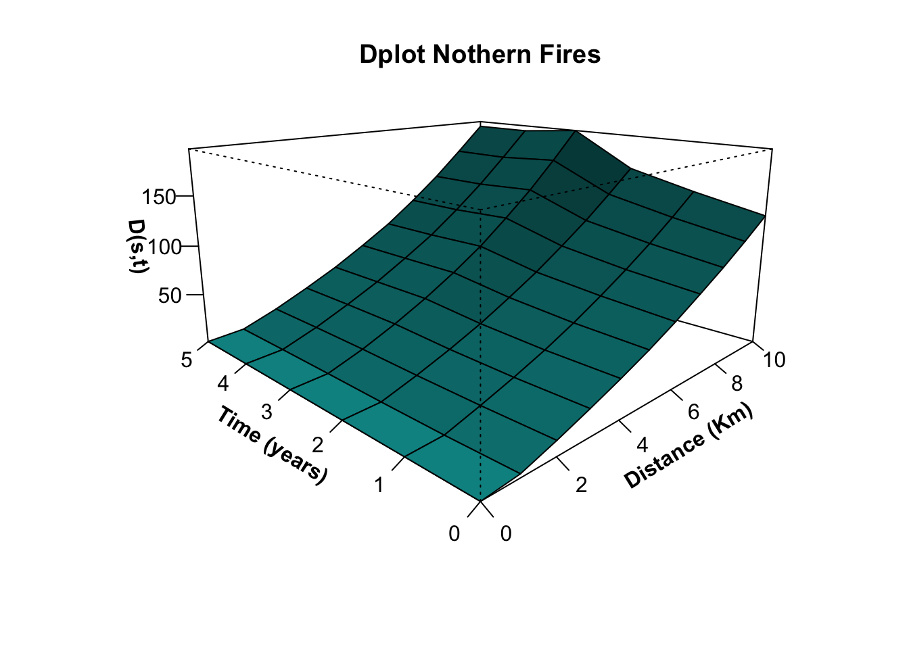
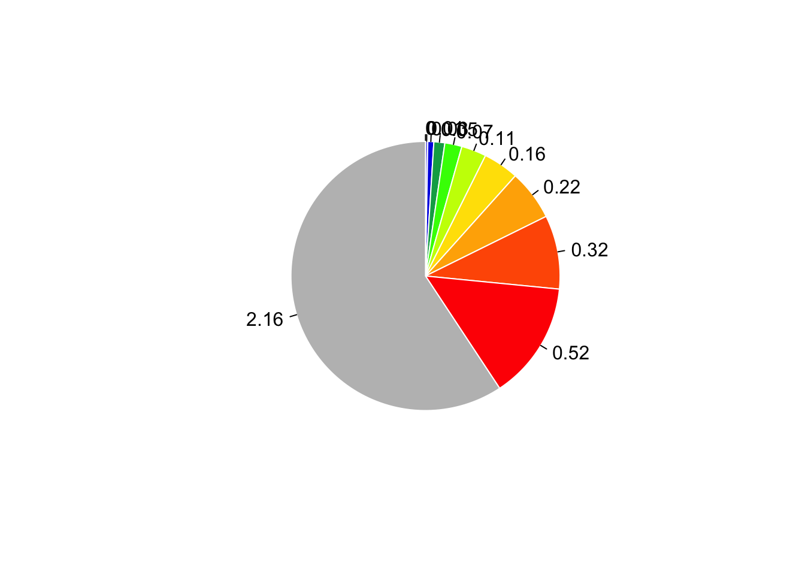
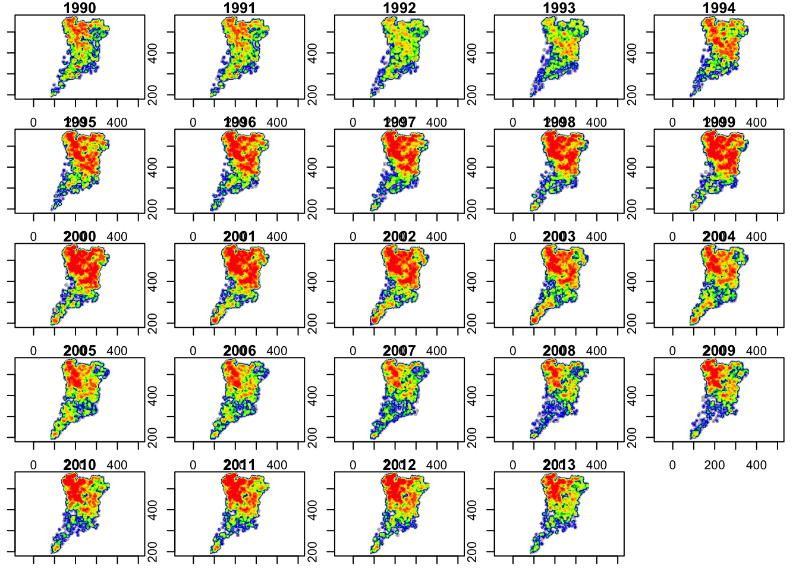

Chapter 4 Spatio-Temporal Cluster Analysis of Geoenvironmental Processes
Spatio-temporal cluster analysis (ST clustering) is a powerful tool used to identify patterns and relationships in data that vary across both space and time. In the context of geoenvironmental processes, this type of analysis helps in understanding how environmental phenomena—such as wildfires, landslides, or flood events—are distributed geographically and how they evolve over time. By detecting clusters, researchers can uncover hotspots of activity, assess trends, and identify potential triggers or influencing factors, leading to more informed decision-making and targeted interventions in environmental management.
4.1 ST clustering for fire management
The configuration of forest fires across space and time presents a complex pattern which significantly affects the forest environment and adjacent human developments. Statistical techniques designed for spatio-temporal random points can be utilized to identify a structure, recognize hot-spots and vulnerable areas, and address policy makers to prevention and forecasting measures.
In this practical computer lab we consider the same case study as in the “Geographically Weighted Summary Statistics” lab. The main objective is to reveal if space and time act independently or whether neighboring events are also closer in time, interacting to generate spatio-temporal clusters. The attribute that we will consider to achieve this goal is the starting date of fires events. To account for the different geographical distribution of fires in Portugal, events occurred in the Norther and Southern area will be modeled separately.
For more details about the input dataset, please refer to the GWSS lab documentation.
4.2 Clustering methods
To detect spatio-temporal clusters of forest fires, we will use the following statistical methods:
The Ripley’s K- function to test the space-time interaction and the spatial attraction/independency between fires of different size.
The kernel density estimator allowing elaborating smoothed density surfaces representing fires over-densities.
We provide below a short description for both these methods. More details can be found in Tonini et al. (2017).
4.2.1 Ripley’s K-function
The Ripley’s K-function allows inferring about the spatial randomness of mapped punctual events. It is largely applied in environmental studies to analyse the pattern distribution of a spatial point process. The original spatial univariate K-function \(K(s)\) is defined as the ratio between the expected number \(E\) of point events falling at a certain distance \(r\) from an arbitrary event and the intensity \(\lambda\) of the spatial point process, this last corresponding to the average number of points per unit area.
Under complete spatial randomness, which assumes the independence among the events, \(K(s)\) is equal to the area of the circle around the target event for each distance’s value. It follows that events are spatially clustered within the range of distances at which \(K(s)\) assumes vales higher than this area, while they are spatially dispersed for lower values. The temporal K-function \(K(t)\) is defined in the same way as for the spatial case, with the time-based intensity and the time length replacing the spatial parameters.
The space-time K-function, \(K(s,t)\) can be considered as a bivariate function where space and time represent the two variables of the equation. It is defined as the number of further events occurring within a distance \(r\) and time \(t\) from an arbitrary event.
4.2.1.1 Spatio-temporal interaction
If there is no space-time interaction, \(K(s,t)\) is equal to the product of the purely spatial and purely temporal K-function. Inversely, if space and time interact generating clusters, the difference between these two values is positive [\(D(s,t)=K(s,t)-K(s)*K(t)\)].
Thus, we can use the perspective 3D-plot of the function \(D(s,t)\) to obtain a first diagnostic of space-time clustering: positive values indicate an interaction between these two variables at a well-detectable spatio-temporal scale.
4.2.2 Kernel density estimator
The Kernel Density Estimator (KDE) is a non-parametric descriptor tool widely applied in GIS-science to elaborate smoothed density surfaces from spatial variables. A kernel function \(K\) allows weighing up the contribution of each event, based on the relative distance of neighboring to the target. The parameter \(h\), called bandwidth, controls the smoothness of the estimated kernel density. Finally, the kernel density function \(f_h(x)\) is estimated by summing all the kernel functions \(K\) computed at each point location \(x\) and dividing the result by the total number of events (\(n\)): \[f_h(x) = \frac{1}{nh}\sum_{i=j}^{n}K(\frac{x-x_i}{h})\]
The time extension of the kernel density estimator (Nakaya & Yano (2010)) allows to compute the three-dimensional kernel density estimator which includes the spatio-temporal dimensions.
In the present case study we apply a quadratic weighting kernel function, which is an approximation to the Gaussian kernel. Regarding the bandwidth’s value, we propose to consider the results of the spatio-temporal K-function as an indicator. Indeed, the distance values showing a maximum cluster behavior over the displayed perspective \(D(s,t)\) plot can be attributed to the \(h\)-value, minimizing the problem of under- or over-smoothing due to an arbitrary choice of the bandwidth.
4.3 Computing lab: spatio-temporal clustering
4.3.1 Load the libraries
Fist you have to load the following libraries:
- splancs: for display and analysis of spatial point pattern data
- sf: Support for simple features, a standardized way to encode spatial vector data
- ggplot2: A system for ‘declaratively’ creating graphics
- sp: Classes and methods for spatial data
- spatstat: comprehensive open-source toolbox for analyzing Spatial Point Patterns
## [1] "ggplot2" "sf" "spatstat" "spatstat.linnet"
## [5] "spatstat.model" "rpart" "spatstat.explore" "nlme"
## [9] "spatstat.random" "spatstat.geom" "spatstat.univar" "spatstat.data"
## [13] "splancs" "sp" "stats" "graphics"
## [17] "grDevices" "utils" "datasets" "methods"
## [21] "base"4.3.2 Import the forest fire dataset
In this section you will load the geodata representing the dataset of the Forest Fires (FF) occurred in the continental Portuguese area in the period 1990-2013. You will also load the boundaries of the study area. You will start by exploring the datasets using mainly visual tools (plotting and histogram).
# Import Portugal boundary
Portugal <- st_read("data/KDE/Portugal.shp") # entire area
PortN<- st_read("data/KDE/Porto_North.shp") # northern area
PortS<- st_read("data/KDE/Porto_South.shp") # southern
# Import the forest fires dataset
FF<-st_read("data/KDE/ForestFires.shp") # entire area
FFN<-st_read("data/KDE/FF_North.shp") # Northern area
FFS<-st_read("data/KDE/FF_South.shp") # Southern area
# Import the shapefile of the Tagus river
river<-st_read("data/KDE/Rio_Tajo.shp")
summary(FF$Area_ha) # summary statistics
hist(FF$Area_ha)
For a better understanding of the phenomenon, we can group the events according to the size of the burnt area and to their incidence in the northern and in the southern part of continental Portugal.
4.3.3 FF-subsets based on the burned areas’ size
Remember that fires of different size can have been induced by different drivers. Thus, in the following, we will investigate all the global cluster behavior of forest fires in Portugal considering the three subset separately.
As you have seen in the lab GWSS, based on the frequency distribution of the burned areas, the following three classes can be defined:
Small fires: less than 15 ha
Medium fires: between 15 ha and 100 ha
Large fires: bigger than 100 ha
## Year Area_ha X Y
## Min. :1990 Min. : 5.000 Min. : 82761 Min. : 7772
## 1st Qu.:1997 1st Qu.: 6.624 1st Qu.:182972 1st Qu.:403849
## Median :2001 Median : 8.569 Median :213159 Median :472892
## Mean :2002 Mean : 9.041 Mean :219789 Mean :440692
## 3rd Qu.:2008 3rd Qu.:11.219 3rd Qu.:259054 3rd Qu.:518384
## Max. :2013 Max. :15.000 Max. :361492 Max. :573192
## geometry
## POINT :10902
## epsg:NA : 0
## +proj=tmer...: 0
##
##
## # This is to save the plot
pSF <- ggplot ()+
geom_sf(data=Portugal)+
geom_sf(data=SF, size=0.5, col="yellow")+
ggtitle("Small fires") +
coord_sf()MF=(subset(FF, Area_ha >15 & Area_ha <=100)) #create a sub-set including only medium fires.
summary(MF)## Year Area_ha X Y
## Min. :1990 Min. :15.00 Min. : 82127 Min. : 7084
## 1st Qu.:1997 1st Qu.:21.18 1st Qu.:186031 1st Qu.:403864
## Median :2001 Median :30.89 Median :219459 Median :468503
## Mean :2002 Mean :38.55 Mean :223915 Mean :439442
## 3rd Qu.:2007 3rd Qu.:51.06 3rd Qu.:264349 3rd Qu.:518248
## Max. :2013 Max. :99.98 Max. :359535 Max. :572488
## geometry
## POINT :12070
## epsg:NA : 0
## +proj=tmer...: 0
##
##
## # This is to save the plot
pMF <- ggplot ()+
geom_sf(data=Portugal)+
geom_sf(data=MF, size=0.5, col="orange")+
ggtitle("Midium fires") +
coord_sf()## Year Area_ha X Y
## Min. :1990 Min. : 100.0 Min. : 83472 Min. : 8840
## 1st Qu.:1996 1st Qu.: 139.6 1st Qu.:193831 1st Qu.:383164
## Median :2002 Median : 220.7 Median :228709 Median :445272
## Mean :2001 Mean : 548.3 Mean :229278 Mean :423441
## 3rd Qu.:2006 3rd Qu.: 447.9 3rd Qu.:266146 3rd Qu.:500321
## Max. :2013 Max. :66070.6 Max. :357933 Max. :571984
## geometry
## POINT :4301
## epsg:NA : 0
## +proj=tmer...: 0
##
##
## # This is to save the plot
pLF <- ggplot ()+
geom_sf(data=Portugal)+
geom_sf(data=LF, size=0.5, col="red")+
ggtitle("Large fires") +
coord_sf()# Arrange the three spatial maps side by side
install.packages('patchwork', repos = "http://cran.us.r-project.org") ##
## The downloaded binary packages are in
## /var/folders/hf/q_2qq0tn1dngf4r3nzfhj3xh0000gn/T//RtmpXq3RfW/downloaded_packages
4.3.4 FF-subsets based on their geographical distribution
In continental Portugal, the northen half of the country (above the Tagus River) is characterized by the predominance of forest and semi-natural areas, and by the development of the main cities with their sub-urban ares intermingled with wild land, which makes the Northern area highly prone to forest fires.
On the other hand, the southern half of the country is dominated by agricultural areas with mixed and broad-leaved forest concentrated near the south-west coast, which makes this are less affected by forest fires. For this reason we will consider these two areas separately.
# Plot the map with all the objects
ggplot ()+
geom_sf(data=Portugal)+
geom_sf(data=river, col="blue", size=2) +
geom_sf(data=FFN, size=0.3, col="red") +
geom_sf(data=FFS, size=0.3, col="orange") +
ggtitle("Forest foirest in the northern and souther area") +
theme(plot.title=element_text(hjust=0.5)) +
coord_sf()
4.4 Space-time K-function
4.4.1 Extract time and PTS object
The function stkhat, included in the library spancs, allows to compute the space-time K-function.
As you can see from the R Documentation (command: help(stkhat)), same data manipulations are necessary to transform the input data in a compatible data frame format.
Namely the user needs to specify:
pts: the input forest fires dataset, with the coordinates to geolocalize each event.
times: a vector of times, defined by the starting date of ignition.
poly: a polygon of class matrix enclosing the input dataset (pts)
s and tm: a vector of spatial (s) and a vector of temporal (tm) distances for the analysis.
# Extract "pts" (divided by 1000 to compute in Km)
FFN_pts <- as.points(FFN$X/1000, FFN$Y/1000)
FFN_times<-FFN$Year # extract "times"
# Extract the coordinates (in Km):
PTN_xy<-st_coordinates(PortN$geometry/1000)
# Define the matrix with the set of bounding points ("poly") enclosing the input dataset:
FFN_poly<-PTN_xy[, -c(3,4)] 4.4.2 Compute the space-time K-function
We compute the space-time K-function for forest fires in the northern area. Since the computation can take a long time (about 20 mints), we propose you to load directly the output R object provided (STK_North_10y). The general code is also provided, but preceded by the hashtag, so it is not treated as a command: you have to remove # if you wish to evaluate the code.
We consider here a subset of forest fires event occurred in the period 2001-2010.
The parameters s and t are defined here as follows: (s) each kilometer distance up to ten kilometers; (tm) each year up to five years.
NB: If you wish to run the code, remove # to make it work
## List of 5
## $ s : num [1:11] 0 1 2 3 4 5 6 7 8 9 ...
## $ t : num [1:6] 0 1 2 3 4 5
## $ ks : num [1:11] 1.61e-04 9.03 2.98e+01 6.18e+01 1.05e+02 ...
## $ kt : num [1:6] 0.814 2.29 3.596 4.827 6.085 ...
## $ kst: num [1:11, 1:6] 1.45e-03 1.06e+01 3.75e+01 7.47e+01 1.22e+02 ...4.4.3 Assess the space-time clustering behavior
In the following section you will explore and plot the values of the three components produced as outputs of the function stkhat: the spatial K-function (ks), the temporal K-function (kt); the space-time K-function (kst).
then, you will plot the perspective 3D-plot of \(D(s,t)\) to evaluate the space-time clustering behavior of forest fires in the present case study. The multifaceted shape of this function, along with the spatial and the temporal dimension, can help to identify peaks of clustering. The corresponding values can be attributed to the bandwidth of the kernel density estimators allowing to elaborate smoothed density maps in the last step of this lab.
4.4.3.1 Plot the stkhat outputs
- Plot of the purely spatial and the purely temporal K function.
# Plot of the purely spatial K function
plot(STK_North_10y$s, STK_North_10y$ks, type="l", xlab="distance", ylab="Estimated Ks", main="Spatial K function")
lines(STK_North_10y$s, pi*STK_North_10y$s^2, type="l", col="red")# Plot of the purely temporal K-function
plot(STK_North_10y$t, STK_North_10y$kt, type="l", xlab="time", ylab="Estimated Kt", main="Temporal K function")
lines(STK_North_10y$t, 2*STK_North_10y$t, type="l", col="red")
- Plot the space-time D-plot
# Define the function: D(s,t)=K(s,t)-[K(s)*K(t)]
Dplot <- function (stkhat, Dzero = FALSE, main=TRUE) {
oprod <- outer(stkhat$ks, stkhat$kt)
st.D <- stkhat$kst - oprod
persp(stkhat$s, stkhat$t, st.D, xlab = "Distance (Km)", ylab = "Time (years)",
zlab = "D(s,t)", expand = 0.5, ticktype = "detailed",
theta = -45, shade = 0.75, cex = 0.7, ltheta=120, col="cyan1", font.lab=2)
}
Dplot(STK_North_10y)
title("Dplot Nothern Fires")
4.4.3.2 Run the space-time kernel density estimator
The multifaceted shape the D-Plot identify peaks of clustering a time value of 3 year. In space, events are clustered at every distance, so in this case we use the maximum values (10 km). these two values are attributed to the bandwidth of the kernel density estimators allowing to elaborate smoothed density maps.
# Run the function
KDE_FFN<-kernel3d(FFN_pts, FFN_times, seq(80, 362, 1), seq(180, 580, 1), seq(1990,2013,1), 10, 3)## [1] 2.893333e-12## 50% 55% 60% 65% 70% 75%
## 0.0002194741 0.0097073381 0.0263666531 0.0478856382 0.0748979448 0.1093260662
## 80% 85% 90% 95% 100%
## 0.1560709189 0.2210177893 0.3232627322 0.5162620818 2.1627084390# Create a blue/red palette
pal<-colorRampPalette(c("grey","blue","green", "yellow","orange", "red" ))
colsR<-pal(length(Q)-1)
# Display classes
pie(Q, clockwise=TRUE, labels=round(Q, digits=2), border="white", col=colsR)
# Plot KDE maps for selected years
oldpar<-par(mfrow=c(5,5), mar=c(1,1,1,1))
for (i in 1:24){
(image(seq(80, 362, 1), seq(180, 580, 1), KDE_FFN$v[,,i], asp=1, xlab="", ylab="", main=1989+i, breaks=Q, col=colsR))
}
4.5 Conclusions and further analyses
This practical computing lab allowed you to asses the global cluster behavior of hazardous events, achieved by using the Ripley’s k-function. In addition, we learned how smoothed density maps can be elaborated from punctual events, namely using the kernel density estimator. Both spatial and the temporal dimension have been considered in this case.
You cluld explore the density distribution of forest fires events through Continental Portugal in the period 1990-2013. In the northern half of the country, hot spots are present almost on each investigated years, with a higher concentration in the northern areas.
To ensure that everything is perfectly clear, we propose you to do this lab again, by using this time another subset chosen among the forest fires in the Southern area, the small, medium or the large forest fires dataset.
For whatever dataset you are going to use, try to answer to the following questions. The reading of the paper Tonini et al. (2017), which inspired this lab, can help you in in this task.
At which spatial and temporal distance you can observe a peak of clustering?
Describe which is spatio-temporal density distribution of forest fires events through the study area.